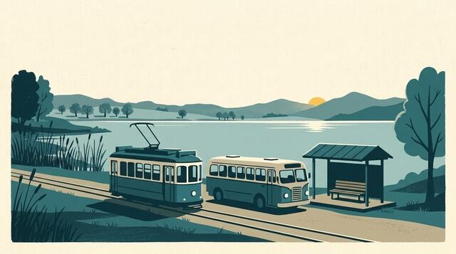

Heute auf dem Wasser
- Baden, Paddeln, Segeln und Winterbaden: Hier erscheint die Bewertung jeder Aktivität.
Badeplätze in der Nähe
Ein Drink oder eine Mahlzeit in der Nähe
- Bar-Restaurant de la Plage municipaleThonon-les-Bains · in der Saison geöffnet
Mitten im Stadtstrand am Quai de Ripaille: Tagesmenü und lokale Spezialitäten, die Füsse im Wasser.
- Hôtel Restaurant de la PlageExcenevex
Fast das ganze Jahr die Füsse im Wasser (von Anfang November bis Anfang Dezember geschlossen), Blick auf See und Berge, saisonale Hausmannskost.
- La Guinguette de la plageExcenevex
Die Strandbar am grossen Sandstrand von Excenevex.
- Restaurant Plage Les PêcheursSciez · in der Saison geöffnet
Eine Institution seit 1964: Terrasse mit den Füssen im Wasser unter hundertjährigen Platanen. Montags geschlossen.
- Yacht RestaurantÉvian-les-Bains
Im Hôtel Évian-les-Bains by Leonardo Hotels (ehemals Hilton) am Quai Paul-Léger, neu interpretierte französische Küche mit Blick auf den See.
- Ô LacNeuvecelle
Hotelrestaurant in Grande Rive, Panoramaterrasse mit Seeblick.
- Hôtel-Restaurant du PortYvoire · in der Saison geöffnet
Mittelalterliches Dorf, Terrasse am Hafen auf der französischen Seite.
Woher diese Zahlen kommen
Am 26. November 2026, am Morgen: 8.3 °C in 70 cm Tiefe, laut dem Alplakes-Modell.
Die Wassertemperatur in Nernier stammt aus dem Alplakes-Modell der Eawag, das Genfersee dreidimensional berechnet: Wir lesen den Wert in 70 cm Tiefe vor dem Badeplatz ab, alle drei Stunden. Wind und Luft stammen von Open-Meteo. Die Badewasserqualität wird nur angezeigt, wenn eine weniger als 30 Tage alte Analyse vorliegt (Kanton Genf für Genfer Badeplätze); andernfalls prüfe sie direkt beim Kanton oder bei der CIPEL, Links am Seitenende. Das Urteil berechnet die App Mein See aus diesen Daten. Unverbindlich: Der See hat immer das letzte Wort.
Rund um diesen See

